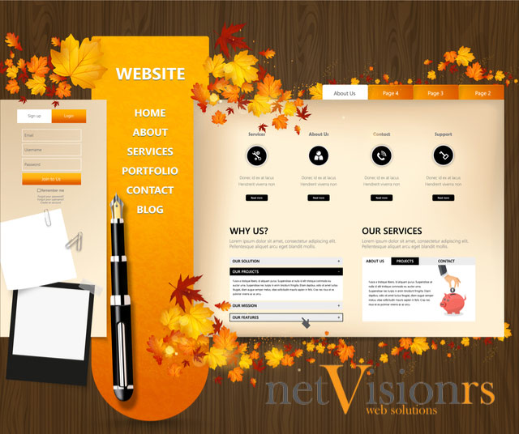
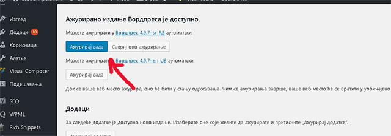
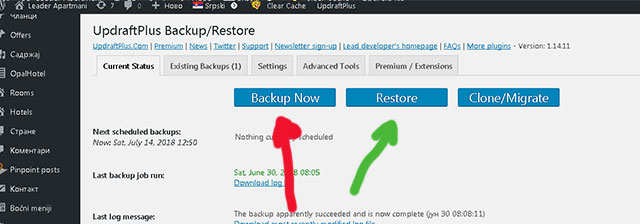
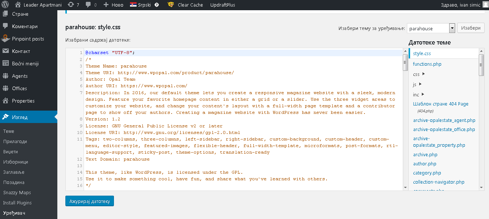
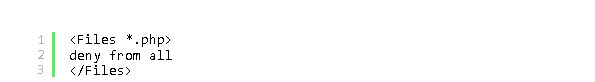

Kako zaštiti wordpress sajt

Zaštita Wordpress Sajta: Pročitajte Najnovije Smernice
Objavljeno 14/07/2018 u 16:54 čPročitajte koje su to najnovije smernice za zaštitu wordpress sajta od upada hakera i malvera.
Kao što već znate wordpress platforma za izradu sajta je postala najkorišćenija platforma u zadnjih par godina. Moramo priznati da se platforma stalno napreduje i usavršava. Cilj je da bi sajtovi bili što bezbedniji i da bi se brže učitavali na guglu.
Da li se wordpress sajt može zaštititi u potpunosti?
Stoprocentna zaštita na internetu ne postoji. Svedoci smo svakodnevnom probijanju vladinih sajtova (CIA, PENTAGON, FBI). Šta reći onda koliko smo mi zaštićeni.
Ukoliko se budete pridržavali najnovijih smernica o zaštiti wordpress sajta mi vam garantujemo da ćete biti 99% bezbedni.
Zaštita wordpress sajta na samom sajtu
- Zašto nam je potrebna zaštita vašeg wordpress-a
- Odabir kvalitetne teme
- Raditi redovan update vašeg wordpress-a
- Jaka šifra vašeg wordpress-a
- Jaka šifra vašeg wordpress-a
- Redovan Backup vašeg sajta
- Instalirajte wordpress security plugin
- Isključivanje editora fajlova
- Isključivanje PHP ekstenzije iz direktorijuma wordpress
- Sprečite pokušaj višestrukog logovanja
- Sprečite pokušaj višestrukog logovanja
Spoljna zaštita wordpress sajta
- Odabir web hostinga
- SSL sertifikat
- Šta su DOS napadi i kako ih prevazići
- Različite IP adrese
- Povezivanje sa Cloud Flare servisom
Odabir Kvalitetnog Hostinga i SSL sertifikat
Danas smo svi uključeni u što veću zaštitu na internetu od hosting provajdera, zaštite domena i nas web developera koji se bavimo izradom sajtova za vas.
Odabir kvalitetnog hostinga je od presudnog značaja. Niko ne želi napadnute sajtove na svom serveru, veliki broj malvera i DOS napada. U tu svrhu osmišljen je CLOUD LINUX WEB HOSTING.
Naša agencija koristi ove servere koji se nalaze kod Nemačkog provajdera Hetzner. Nemački inženjeri su napravili kvalitetan hosting koji pruža jako veliku zaštitu.
Šta su DOS napadi i kako ih prevazići
DOS napad je simulacija velikog broja poseta ka vašem sajtu u jedinici vremena. Sajtovi koji su na lošim hostinzima pucaju u tom trenutku. Obara se server.
Jedno od najboljih rešenja je odabir Cloud Linux Hosting provajdera. To se pokazalo kao odlično rešenje protiv DOS napada. U cloud-u je umreženo mnogo servera, to omogućava korišćenje zajedničkih resursa kao što je RAM Memorija. Prilkom DOS napada vaš sajt dobija dodatnu RAM memoriju od 1 GB kako bi izdržao napad dok se ne preduzmu druge mere.
Kupovina više IP adresa
Druga dobra stvar je što možete kupiti IP adresa koliko želite. Vaš sajt je na jednoj eventualno dve IP adrese a ostale ne prijavljujete nigde. U slučaju kad krene DOS napad možete odmah preći na neku od nekorišćenih IP adresa i tako momentalno izbegavate napad. DOS napadi se ne dešavaju često ali ipak možete postati žrtva ovakvih napada.
Dobar hosting provajder će vas odmah putem mejla obavestiti ukoliko imate malver na sajtu i dati vam vremena da odreagujete.
Šta je SSL sertifikat i gde ga kupiti?
SSL sertifikat je Security Transfer Protokol koji omogućava bezbednu vezu između vašeg sajta i servera.
Mnoge kompanije daju besplatan SSL. Ono što vam mi preporučujemo ukoliko imate onlineshop ili firmu od ugleda je kupovina Extended SSL sertifikata.
Ovaj sertifikat košta 99 USD godišnje. On vam omogućava da imate najveći Security nivo zaštite od mogućih pecanja podataka sa vašeg sajta, na putu od servera do vašeg sajta.
Pored toga vam omogućava da vam u brauzeru stoji ime vaše firme i zeleni HTTPS protokol. To odaje veliku sigurnost pri kupovini na vašem sajtu. Na žalost to mogu samo preduzeća, mi preduzetnici to ne možemo kupiti.
Odabirom Cloud Linux Hosting provajdera za 20 eur mesečno i korporativnog SSL sertifikata za 10 USD mesečno vi ste već osigurali sebi zdrave temelje vašeg biznisa.
Ukoliko vam mi radimo sajt to je pod obavezno za naše klijente.
Šta je Cloud Flare?
Cloud Flare je kompanija koja je osmislila rešenje kako dodatno ubrzati web sajtove i zaštititi ih od DOS napada.
Ova kompanija je od skoro prisutna i u Beogradu pored 20-tak Evropskih gradova. To omogućava da se vaš sajt iako je na Nemačkom serveru koji je bolji i kvalitetniji učitava brzo kao da je u Srbiji.
Na koji način Cloud Flare ubrzava sajt
Cloud Flare kešira vaše slike i ostale resurse tako da se oni ne učitavaju sa servera nego iz keša. To omogućava uštedu u protoku na vašem serveru, ubrzava učitavanje sajta na svim lokacijama gde je prisutna ova kompanija. Vaš sajt jednako će se brzo učitavati širom sveta.
Pitate se šta će mi onda hosting? Hosting je neophodan jer čuva vaše originalne fajlove i sve nove stranice koje napravite na sajtu.
Cloud Flare stalno uči i beleži problematične IP adrese i sajtove koji se sprečavaju da naude vašem sajtu pre nego što i dodju u tu mogućnost.
Da li je besplatan Cloud Flare servis?
Cloud flare ima besplatan i plaćeni servis. Za većinu sajtova na internetu dovoljan je free servis. Mi sve naše klijente postavimo na server u Nemačkoj kako smo gore opisali i povežemo sa Clou Flare servisom.
Zašto je potrebna zaštita na wordpress-u?
Pitate se sigurno ko će baš mene da napadne. Nije stvar u tome da neko ima nešto protiv vas. Hakeri prave robote koji imaju za cilj da probiju slabe tačke vašeg wordpress sajta.
Zašto oni to rade? Uglavnom iz našeg dugogodišnjeg iskustva, da bi sa vašeg servera slali stotine hiljada mejlova uglavnom u marketinške svrhe.
Kad bi slali regularno s obzirom da su većina tih mejlova ne postojeći njihov server bi bio proglašen za spamerski. Njihova IP adresa bi bila stavljena na blackliste. Zato oni to rade sa vama.
Kao što ste videli nemaju oni ništa protiv vas, oni samo koriste vaše resurse.
Druga najčešća stvar je krađa mejlova iz baze. Tako dolaze do velike baze mejlova. Uglavnom sajtovi koji skupljaju mejlove od svojih klijenata kao što su sajtovi za kupovinu ili prodaju robe, njihove najveće žrtve.
S obzirom da roboti traže sajtove sa slabom zaštitom svako ko ima ne obezbedjen sajt je njihova žrtva.
Odabir kvalitetne teme za wordpress
Wordpress ima gotove teme koje se prilagodjavaju svakom klijentu ponaosob. Teme prave razne web agencije i neke su bolje u tome od drugih.

Dobre i kvalitetne teme su one o kojima se razmišljalo sa aspekta SEO optimizacije ali i brzine učitavanja sajta. Takve teme su dobre jer su one dobar temelj da vaš sajt zadovolji sve kriterijume koje traži gugl.
S obzirom da smo tokom 10 godina rada uradili mnogo sajtova, znamo koje teme su bolje od drugih. Tako da je najbolje da nam se obratite još u toj fazi.
Radite redovan update vašeg wordpress sajta
Wordpress kao platforma stalno pronalazi slabe tačke i redovno ažurira svoju platformu. Ukoliko i vi redovno radite update bićete koliko toliko zaštićeni.
To nije komplikovano, ulogujete se u svoj admin panel i ažurirate vaš wordpress na najnoviju verziju.

Jaka šifra za Wordpress
Najčešći pokušaji hakovanja WordPressa koriste se preko ukradene lozinke. Iz tog razloga preporučujemo vam da nestavljate lagane kratke šifre jer se one najlakše probijaju. Koristite najmanje 8 karaktera kombinujući velika i mala slova, specijalne karaktere i brojeve.
Šifra mora biti jaka ne samo za WP-ADMIN nego i za FTP nalog, baze podataka i profesionalnu adresu e-pošte.
Glavni razlog zašto početnici ne vole da koriste jake lozinke je to što ih je teško zapamtiti. Dobra stvar je što više ne morate da pamtite lozinke. Možete koristiti neki od menadžera lozinke.
Trudite se da ne dajete svakom vaš admin pristup. Ukoliko je to neophodno napravite novog user i dodelite mu jaku šifru.
Redovan Backup vašeg sajta
Redovan backup sajta poštedeće vas velikih muka a vrlo ga je jednostavno uraditi. Naša agencija radi svakodnevni backup svih sajtova na našem serveru. Međutim ukoliko želite i sami da imate backup preporučujemo da instalirate plugin UpDraftPlus koji ima dobre ocene od velikog broja korisnika.

Kad uradite backup možete ga skladištiti na nekom od free servisa kao što je gdrive ili dropbox.
Instalirajte wordpress security plugin
Preporučujemo da instalirate jedan od mnogobrojnih security pluginova koji su besplatni a pružaju solidnu zaštitu. Jedan od onih koji ima veliki broj dobrih ocena je WordFence plugin. Plugin je odličan i pruža vam razne informacije npr. da li se neko ulogovao na vaš web sajt, da li je izašao neki novi update nekog od pluginova. Plugin ima dobar Firewall tako da štiti sajt od malicioznih malwera itd.
Isključivanje editora fajlova
WordPress se isporučuje sa ugrađenim kodnim uređajem koji vam omogućava da uredite teme direktno iz vašeg administratorskog područja VordPress-a. U pogrešnim rukama, ova mogućnost može biti sigurnosni rizik i zato preporučujemo isključivanje.

Ovaj editor lako možete isključiti u vašem wp-config.php fajlu. Samo dodajte ovaj kod ispod:
1 | //Disallow
2 | define ('DISALLOW_FILE_EDIT', true);
Isključivanje PHP ekstenzije iz direktorijuma wordpress
Još jedan način narušavanja bezbednosti vašeg sajta je izvršavanje datoteka sa ekstenzijom php u folderima gde to nije potrebno kao što je wp-content/uploads
To možete uraditi tako što ćete u vaš .htaccess fajl zalepiti ovaj kod ispod i ceo fajl uplodovati u ovaj folder (wp-content/uploads)

Sprečite pokušaj višestrukog logovanja
Po default-u wordpress ostavlja korisnicima mogućnost da se loguju koliko god puta žele. To ostavlja mogućnost za zloupotrebu. Hakeri će pokušavati sa raznim kombinacijama šifri da se uloguju na vaš sajt.
Ovo se može ograničiti pluginom koji se zove Login LockDown
Plugin se može podesiti kako vi želite, koliko puta sme da se pogreši lozinka, kad da se poništi blokada itd.
Backdoors scripte
Ovo je jedan od možda najvećih problema. Hakeri kad na jedan od gore navedenih načina probiju sajt instaliraju tzv. backdoors scriptu.
Ova scripta im omogućava da uvek mogu da pristupe vašem sajtu. Na primer vi promenite sve šifre a oni opet uđu na sajt. U ovom slučaju ukoliko sigurnosni plugin nije poslao obaveštenje o postavljanju scripte treba vam pomoć.
Obratite se nama ili nekoj drugoj agenciji koja će pročešljati sve fajlove i očisti sajt od svih scripti i malwera.
Zaključak o bezbednosti wordpress sajta
Kada ovo sve primenite sigurnost vašeg web sajta će biti na zavidnom nivou. Nažalost uglavnom nam klijenti dolaze sa svim ovim propustima.
Stara narodna: Bolje sprečiti nego lečiti
Najsigurniji put je obratiti se stručnim ljudima od samog starta kad ste poželeli da napravite sajt. Svaki korak je bitan, ozbiljan posao ne trpi improvizacije.
Mi smo shvatili da ne želimo više da pravimo kompromise sa klijentima koji nemaju ni minimalan budzet za izradu sajta.
Kada se desi problem niko vas ne pita za koliko ste radili sajt, nego zašto mi sajt ne radi.
Ukoliko smo vam bar malo pomogli da shvatite problematiku i da sami zaštitite vaš wordpress sajt, podelite ovaj članak i sa vašim prijateljima nećemo se ljutiti :)
Ukoliko vam je ovaj tekst bio koristan, sigurno će biti i vašim prijateljima pa vas molimo da ga podelite na vašoj društvenoj mreži. Hvala!

SEO smernice za 2019 godinu
Pročitajte na šta treba da obratite pažnju u 2019 godini....
Detaljnije...

Linkbuilding Tutorijal za 2019
Zašto su backlinkovi i dalje najvažniji za optimizaciju sajta...
Detaljnije...

Kad dolaze SEO rezultati?
Kada SEO počinje da generiše veću prodaju, kad dolazi rangiranje...
Detaljnije...